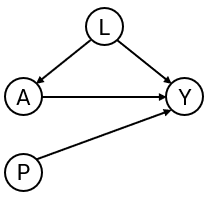

ipeval: an R package for validating predictions under interventions
Jasper W.A. van Egeraat, Ruth Keogh, Nan van Geloven
ipeval.RmdAbstract
We present the R package ipeval, which facilitates evaluation of predictive performance under hypothetical intervention settings using observational data. The package currently supports binary outcomes and time-to-event outcomes under binary (point) interventions. It implements methods to assess counterfactual predictive performance using inverse probability of treatment weighting (IPTW).
Introduction
Certain prediction models aim to estimate an individual’s risk under hypothetical intervention scenarios. These are referred to as interventional prediction models or models for prediction under interventions (where intervention can e.g. be a certain medical treatment but could also be a certain behavioral change or health policy).1 For example, a model may estimate a patient’s risk if untreated, if undergoing surgery, or if initiating medication.2–4 Models may also facilitate risk predictions under several treatment options.5
Because such predictions under interventions are often intended to inform medical decision-making, rigorous validation is essential. In standard prediction settings, validation involves comparing estimated risks with observed outcomes in a validation dataset. This approach is not directly applicable to predictions under interventions in observational data. Each individual typically receives only one intervention, and outcomes that they would have had under alternative interventions remain unobserved. These are referred to as counterfactual outcomes in causal inference terminology.6
When models are used to guide treatment decisions, their performance must be evaluated across all relevant intervention options for each individual, not only the observed intervention option.1,7,8 Because clinicians generally assign treatments based on patient characteristics, treatment groups may not be comparable. Because of this, a model that accurately estimates the risk of a patient under treatment may not perform well estimating their counterfactual risk under no treatment, even if the model also performs well in the group of patients that were actually untreated.
Evaluating performance of the predictions under only the observed treatments reflects predictive performance under the historical treatment assignment mechanism present in the observed data. If such models are used to inform treatment decisions in new patients, the treatment assignment mechanism may change, rendering conventional performance measures less relevant. In fact, a model that performs well under historical treatment assignment mechanism can lead to harmful decisions when applied to new patients.9
The appropriate target is counterfactual predictive performance: the agreement between estimated risks and the outcomes that would be observed if all individuals were assigned the specific intervention option of interest. For example, how well do estimated risks align with outcomes in a hypothetical scenario where all patients receive treatment? Despite its importance, a recent review indicates that this type of validation is rarely conducted.10 This package addresses this gap by providing tools to perform such evaluations for binary and time-to-event outcomes, based on the work of Keogh and Van Geloven (2024).1
Methods
The implementation uses the observed validation data to approximate a counterfactual dataset representing a population in which all individuals receive a specified treatment option. This is achieved via inverse probability of treatment weighting (IPTW). Each individual is weighted by the inverse of the probability of receiving their observed treatment conditional on confounders. This reweighting allows individuals who received a given treatment to represent similar individuals who did not receive this treatment. Validity of this approach relies on standard causal assumptions: conditional exchangeability, consistency, positivity, and correct specification of the treatment model. More details are given elsewhere.1,6,7
Predictive performance under a given intervention is then evaluated by comparing estimated risks with observed outcomes in the weighted (pseudo-)population. The package supports the following performance metrics: area under the receiver operating characteristic curve (AUC), Brier score, observed-expected (O/E) ratio, and calibration plots.
Illustration
To demonstrate package functionality, we require a validation dataset and interventional predictions to validate. We simulate data with binary treatment , binary outcome , continuous confounder and an additional predictor (see Figure 1). Treatment assignment depends on , and treatment has a protective effect on the outcome (if the probability of is lower than if ). Table 1 shows the first few rows of the data.
